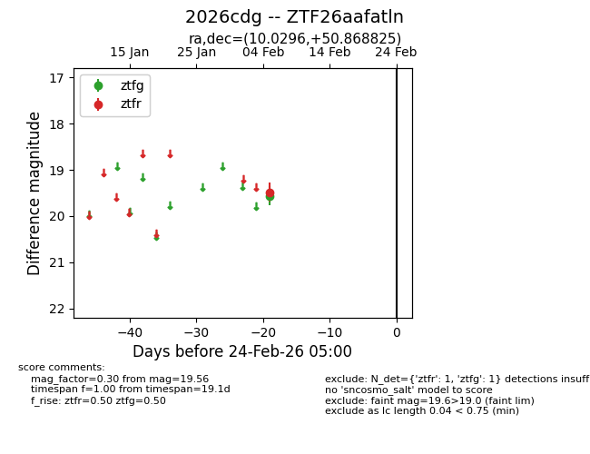
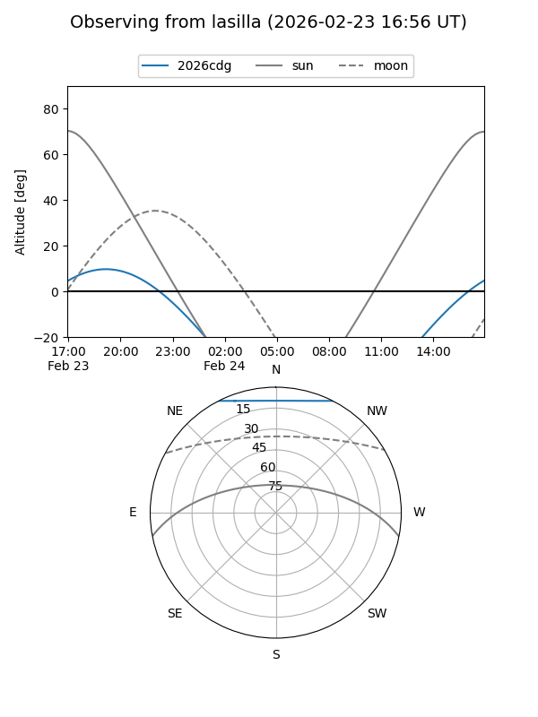
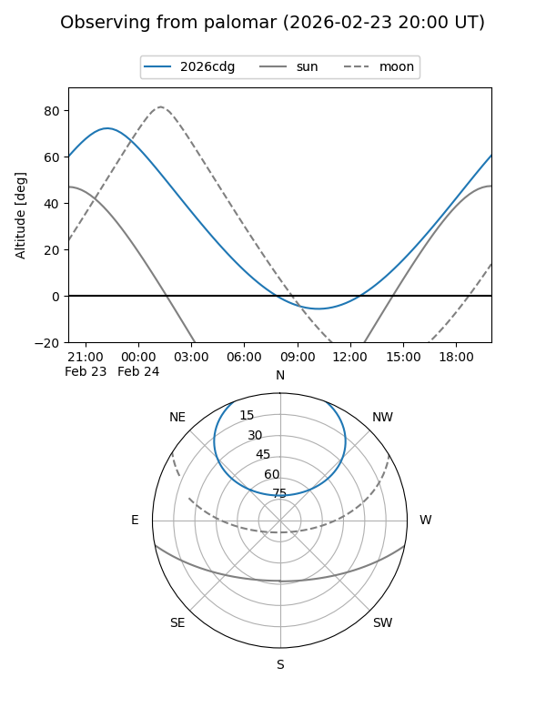

2026cdg
Target 2026cdg at 2026-02-24 09:08
Aliases and brokers:
FINK: link
Lasair: link
ALeRCE: link
TNS: link
YSE: link
alt names
ZTF26aafatln (ztf,fink_ztf)
2026cdg (tns,yse)
Coordinates:
equatorial (ra, dec) = 10.0296,+50.86883
equatorial (HMS+DMS) = 00:40:07.11,+50:52:07.77
galactic (l, b) = (121.1068,-11.96281)
Flags:
Photometry:
last ztfg=19.56, ztfr=19.49
1 ztfg, 1 ztfr detections
Lightcurve

Visibility


Additional plots